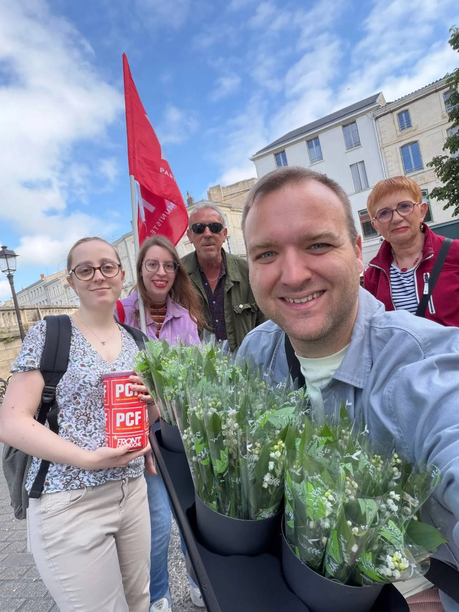
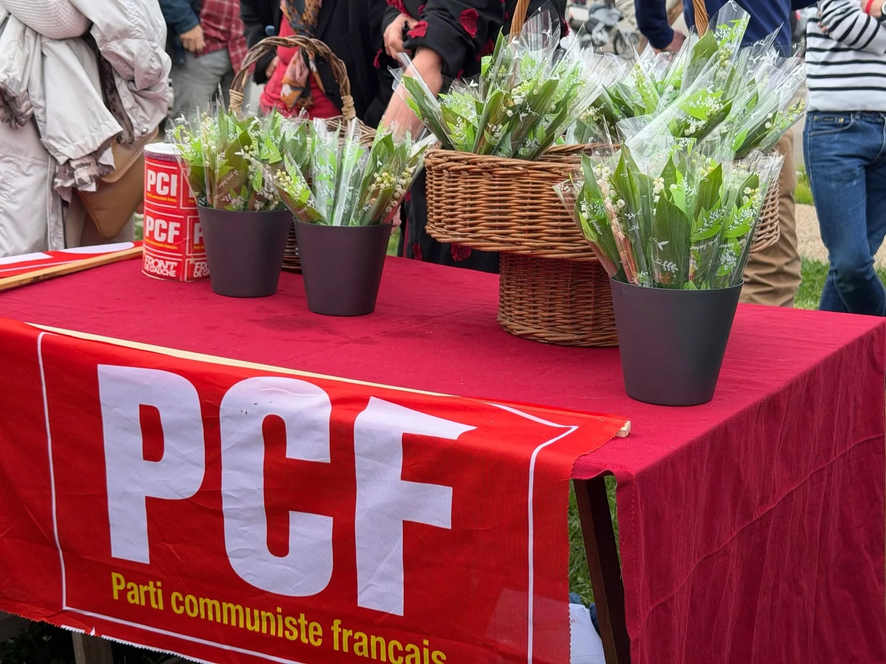

Compte rendu fédéral
À Niort, nous avons porté nos revendications du 1er Mai
Date de mise à jour indiquée par Facebook · 1 mai 2026
Repères éditoriaux
Le 1er mai, nous étions au marché de Niort pour la traditionnelle vente du muguet, puis au rassemblement syndical à Port Boinot. Avec les organisations syndicales, nous avons porté nos revendications pour les salaires, les droits sociaux et la paix.
Texte de la publication · PCF Niort
Les communistes de Niort étaient ce matin au marché pour la vente traditionnelle du muguet, puis au rassemblement à Port Boinot à l'initiative des organisations syndicales, pour porter nos revendications pour nos salaires, nos droits sociaux et pour la paix.


Sources
PCF Niort · publication relayée par le PCF 79 · bibliothèque Facebook · AR-0002-FB-00791
À lire aussi · À Niort, notre appel pour un 1er Mai de lutte et de paix